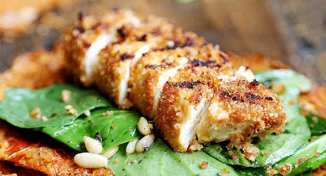
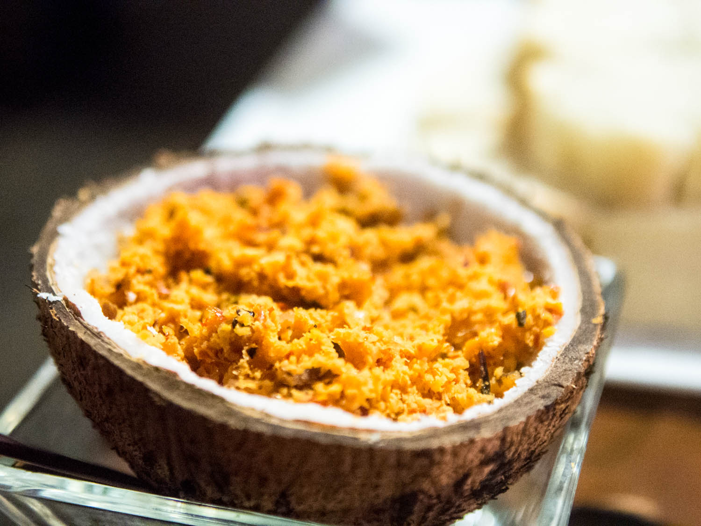

About Us
The AUGUSTO Hotel’s roots can be traced all the way back to 1957. Founded by Mr.
Nagasamy Naidu under the name Anandha Vilas Biriyani Hotel in Dindigul. He always wore a turban called THALAPA(a traditional head dress), which over the years became synonymous with his brand and cooking styles, leading him to earn the nick name “Thalappakatti Naidu” which would eventually became the name of our brand and restaurants.
High quality and taste are of prime importance, and because of this our brand of Biriyani and other food products have attained widespread popularity all across South India.
There are numerous articles published in different journals about our Biriyani and other food products. As a result of our efforts, the word “Thalappakatti” for a common man in Tamil Nadu today refers to High Quality Biriyani.


Our restaurant, AUGUSTO offers a sophisticated dining experience for those seeking to explore beyond the ordinary and discover the full potential of south-indian dining experience.